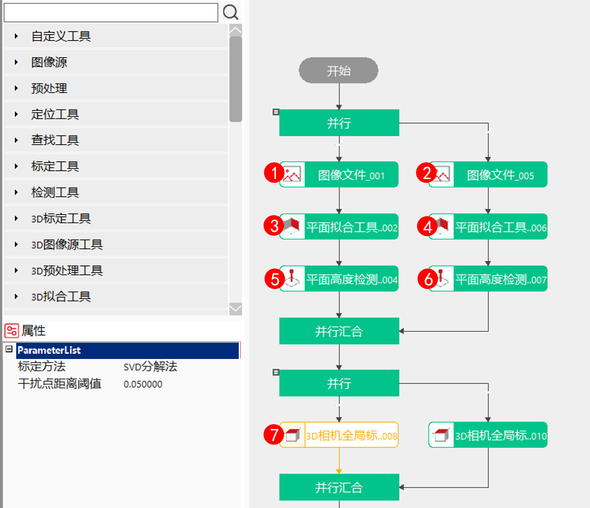
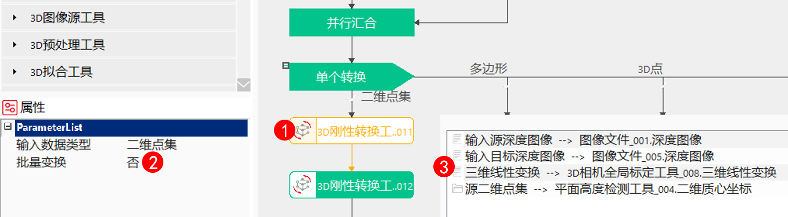
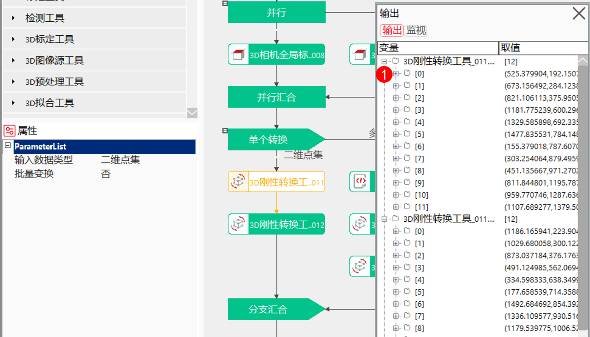

3D刚体变换工具根据3D相机标定生成的平移旋转关系，对ROI、3D面、3D点等3D数据进行刚体变换，从而使转换后的数据在目标图像中位置保持和源图像中一致。
3D刚体变换工具主要针对实际工程中：两个或多个3D相机扫描同一个产品，当产品位置发生变化，图像ROI需要做出相应的调整，当前操作只能对每个ROI位置大小进行调整，导致重复操作，步骤繁琐，所以想增加一个根据相机标定生成的映射关系和图像参数对源图像到目标图像的ROI坐标映射工具，提升软件易用性。
3D刚体变换工具通过输入的三维线性变换关系将源图像中的ROI、3D面、3D点等数据转换到目标图像中。

三维线性变换关系
（1）三维线性变换关系生成方式主要是通过3D相机全局标定工具获取，操作方式参考3D相机全局标定工具操作说明手册；
（2）三维线性变换关系生成方式也可根据实际项目情况生成；

转换类型
可以切换四种类型，分别为：二维点集、多边形、3D点、3D面等；
批量转换
当选择“否”时，工具每次执行只能转换单个二维点集、多边形、3D面，其中3D点只能是批量转换，所以选择转换类型为：“3D点”时，会默认是批量转换，且不显示批量转换属性参数，防止误操作；当选择“是”时，工具一次进行多个二维点集、多边形、3D面的转换，同样，对应的数据链输入类型变为相应转换类型的数组格式；
多个三维线性变换
只有当“批量转换”设置为“是”的时候，属性框才会显示此参数，当“多个三维线性变换”选择“是”时，工具可以对多个选择的转换类型，按照不同的三维线性变换进行转换，此时要注意：对应转换类型的数组大小要和三维线性变换数组的大小一致，否则会转换失败，选择“否”时，批量转换只能使用同一个三维线性变换；

无
| 参数名称 | 参数说明 |
|---|---|
| 输入数据类型 | ROI二维点集、ROI多边形、3D面、3D点等转换类型。 |
| 批量转换 | 是：显示数组类输入数据链；否：显示非数组类数据链 |
| 启用不同3D变换 | 是：显示数组类输入数据链；否：显示非数组类数据链 |
| 开启并行运算 | 是否开启并行运算，选择是时，算法将开启OpenMp并行计算方式，可以提升计算速度，但可能出现耗时不稳定的情况，选择否时，算法将关闭OpenMp并行计算。 |
| 线程数百分比 | 设置并行运算的线程数百分比，有效范围为 (0, 0.75]，对应表示(0%, 75%]百分比范围。 |
| 三维线性变换（数据链） | 用于旋转平移关系参数。 |
| 三维线性变换数组（数据链） | 用于旋转平移关系参数数组。 |
| 源二维点集（数据链） | 用于获取需要转换的ROI数组数据，便于不支持图形的脚本写入。 |
| 源二维点集数组（数据链） | 用于获取需要转换的ROI数组数据，便于不支持图形的脚本写入。 |
| 源ROI多边形（数据链） | 用于获取需要转换的ROI数据。 |
| 源ROI多边形数组（数据链） | 用于获取需要转换的ROI数组数据。 |
| 源3D点集（数据链） | 用于获取需要转换的3D点数组数据。 |
| 源3D面（数据链） | 用于获取需要转换的3D面数据。 |
| 源3D面数组（数据链） | 用于获取需要转换的3D面数组数据。 |
| 参数名称 | 参数说明 |
|---|---|
| 源二维点集数组 | 用于获取需要转换的ROI数组数据，或便于不支持图形的脚本写入。 |
| 转换二维点集数组 | 转换后的二维点集数组。 |
| 转换二维点集 | 转换后的多边形ROI顶点数据。 |
| 转换ROI多边形 | 转换后的多边形ROI数据。 |
| 转换ROI多边形数组 | 转换后的多边形ROI数组数据。 |
| 转换3D点集 | 转换后的3D点数组数据。 |
| 转换3D面 | 转换后的3D面数据。 |
| 转换3D面数组 | 转换后的3D面数组数据。 |
| 源二维点集数组（数据链） | 用于获取需要转换的ROI数组数据，便于不支持图形的脚本写入。 |
| 转换二维点集数组（数据链） | 转换后的二维点集数组。 |
| 转换ROI多边形（数据链） | 转换后的多边形ROI数据。 |
| 转换ROI多边形数组（数据链） | 转换后的多边形ROI数组数据。 |
| 转换3D点集（数据链） | 转换后的3D点数组数据。 |
| 转换3D面（数据链） | 转换后的3D面数据。 |
| 转换3D面数组（数据链） | 转换后的3D面数组数据。 |
| 执行结果 | 工具执行结果，true/false |
| 执行时间 | 工具执行完所需的时间 |
参见“\Samples\3D\深度图\3D刚体变换工具.gvp”。